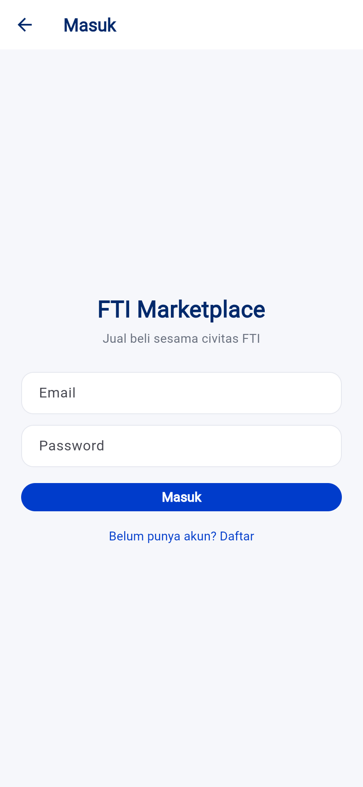
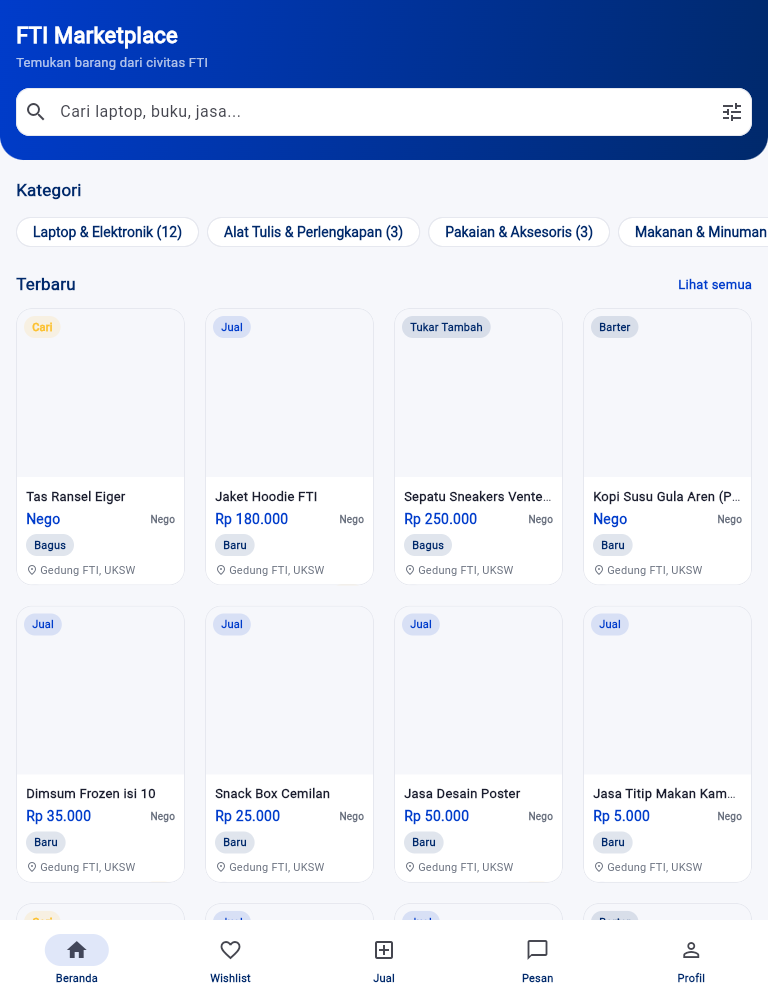
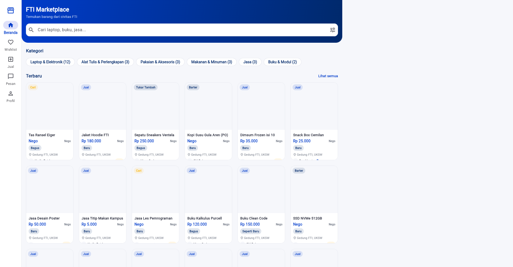
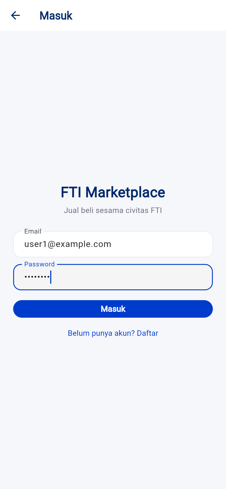

HCI Final Project · Design Report
From a WhatsApp group to a real marketplace.
A cross-platform campus marketplace for the Faculty of Information Technology — designed from student research, built as a working Flutter app, web storefront, and Laravel admin.
- Author
- Azriel Fajar Wicaksono
- NIM
- 672025121
- Course
- Interaksi Manusia & Komputer
- Faculty
- FTI · UKSW
FTI Marketplace · Design ReportAzriel Fajar Wicaksono · 672025121
00 Overview
FTI students already buy and sell from each other — but it happens in a noisy WhatsApp group where listings scatter, search is impossible, and trust is a guess. This project turns that informal habit into a structured, cross-platform marketplace, designed around what students actually told us they need.
8
survey respondents,
FTI students
6/8
name discovery as
their biggest pain
7/8
trust a seller by
photo + identity
3
platforms, one DB:
app · web · admin
Contents
01Problem Statementp.3
02User Research — Survey (N=8) & Findingsp.4
03User Personasp.6
04Mobile Designp.7
05Desktop / Web Designp.9
06Design Rationalep.10
07Cross-Platform Consistencyp.11
08Prototype — The Working Buildp.12
Universitas Kristen Satya Wacana · Fakultas Teknologi Informasi2
FTI Marketplace · Design Report01 · Problem Statement
01 Problem Statement
The FTI faculty runs an informal second-hand marketplace inside a WhatsApp group, using tags like #WTS#WTB#WTT#WTBT to signal intent. It works socially, but fails as a marketplace.
What breaks today
- Discovery is impossible. Listings vanish up the chat as new messages arrive. There is no search, no category, no archive.
- Trust is a guess. A buyer cannot tell a reliable seller from a stranger — no reviews, no track record, no verified identity.
- No structure. Price, condition, and location live in free-text paragraphs that are easy to omit and impossible to filter.
- Negotiation is awkward. Haggling happens in public group chat where everyone watches.
The opportunity
- The behaviour already exists — demand is proven, it just lacks a home.
- A bounded campus community means real accountability is possible.
- The four WhatsApp tags map cleanly to a structured listing type the app can model.
Design problem statement
"FTI students want to buy and sell within their community, but the current WhatsApp group makes items impossible to find and sellers impossible to trust."
Goals of the design
| Goal | Design response |
|---|
| Make items findable | Search, category chips, listing-type filters, structured cards — discovery is the headline feature, not an add-on. |
| Make sellers trustable | Profile photo + real name first, then ratings, reviews, badges, and a "Civitas FTI" affiliation tag. |
| Keep posting effortless | Chip-and-dropdown sell form, minimal free typing, photo picker. |
| Move negotiation private | 1-to-1 real-time chat with a structured "Make an Offer" action. |
UKSW · FTI3
FTI Marketplace · Design Report02 · User Research
02 User Research
Before building, we surveyed FTI students with a 10-question Google Form (N=8, collected 23 June 2026). Respondents were predominantly 18–20 (5/8) with the remainder 21–23. The findings directly shaped — and in two places corrected — the design.
Q4What is the biggest pain in informal student trading? (multi-select)
Can't find buyers/sellers
6
Headline finding
Discovery is the #1 problem (6/8). This is why search, browse, and category filtering lead the entire product — not chat, not payments.
Q7What makes you trust a seller? (multi)
Q5Mandatory info on a listing? (multi)
Research that corrected the plan
Identity beats verification (Q7). We had assumed campus-email verification would be the headline trust feature. Students disagreed: a clear profile photo + real name (7/8) matters more than an email badge (4/8). The seller row was redesigned to lead with avatar and name; email-verification became secondary.
UKSW · FTI4
FTI Marketplace · Design Report02 · User Research
Remaining findings & design implications
| Q | Question | Result (N=8) | Design implication |
|---|
| Q1 | Aware of the FTI marketplace group? | 7 already knew, 1 just found out | The group exists but onboarding must still explain the app's purpose. |
| Q2 | Ever transacted with peers? | 5 interested-but-never, 3 done it, 0 uninterested | Latent, untapped demand. Target the interested newcomer with low-friction flows. |
| Q3 | Categories wanted most | Electronics ×3, Clothing ×3, Food ×2, Stationery ×2 | Lead seed data & featured categories with electronics + clothing. |
| Q6 | Preferred transaction model | COD on campus ×6, transfer ×2 | COD is primary; transfer is secondary and by mutual agreement. No payment gateway. |
| Q8 | Which platform? | Both ×5, mobile-only ×3, web-only 0 | Confirms dual mobile + web, mobile primary. Kills any web-only doubt. |
| Q9 | Expected usage frequency | When-needed ×4, 1–2×/month ×3, weekly ×1 | Need-based usage → wishlist + notifications to re-engage dormant users. |
Q10 — open feedback (verbatim, drove three features)
Access model
"namanya marketplace FTI, namun seluruh orang dapat mengakses app… mhs FTI sudah pasti mendapat potongan harga."
→ Public access + FTI badge (affiliation, not a discount engine).
Reviews
"fitur bisa lihat ulasan orang lain."
→ Public, login-free review reading on every seller profile.
Gamification
"leaderboard dan reward agar org rajin berdagang."
→ Leaderboard + badge tiers as status reward.
A fourth respondent asked for "filter jenis barang" (category filtering), reinforcing the discovery priority. Filtering was already core to the design.
Research summary → product
Every major feature traces to data: discovery (Q4) → search/filter; trust (Q7) → identity-first seller row + reviews; required fields (Q5) → price/condition/photo on the card; access (Q10) → public + FTI badge; motivation (Q10) → leaderboard; re-engagement (Q9) → wishlist + notifications.
UKSW · FTI5
FTI Marketplace · Design Report03 · Personas
03 User Personas
Two personas were derived directly from the survey clusters. They are reproduced in full on the standalone persona sheet; summarized here to anchor the design decisions that follow.
Primary · The Latent Buyer
Aufa, 19
Goal: find affordable used electronics from someone she can trust, in one tap.
Frustration: can't find sellers in the scattered WA group; afraid of scams.
Trusts via: profile photo + identity, then reviews.
Q2 ×5 clusterwhen-needed
Secondary · The Active Seller
Daniro, 22
Goal: move items fast, build a visible reputation, get recognised.
Frustration: effort and reliability go unrewarded today.
Motivated by: leaderboard, badge tiers, accumulating reviews.
Q2 ×3 clusterQ10 leaderboard
How the personas shaped decisions
| Persona need | Resulting design |
|---|
| Aufa — low-friction discovery | Search bar on Home, category chips, infinite-scroll grid, structured cards. |
| Aufa — trust before contact | Avatar + real name lead the seller row; public reviews readable without login. |
| Daniro — reputation & status | Badge tiers (Pemula → Terpercaya → Top Seller) + a public leaderboard. |
| Daniro — multi-device selling | Identical Flutter app on mobile and web; manage listings from either. |
UKSW · FTI6
FTI Marketplace · Design Report04 · Mobile Design
04 Mobile Design
The mobile app (Flutter) is the primary product — a Facebook-Marketplace-style storefront recolored to the FTI brand. Bottom-tab navigation, soft rounded cards, pill buttons, category and spec chips.

OnboardingExplains the app's purpose — "no longer scattered in the WhatsApp group" (answers Q1 discovery-of-app).

Home / BrowseSearch bar, category chips with live counts, "Terbaru" card grid with price, condition & location (Q5 fields).

Listing detailSeller row leads with avatar + name + badge (Q7), spec chips, Make-Offer & Chat CTAs.
Key mobile screens
- Home / Browse — the discovery surface. Search, category chips, listing-type filters, and a card grid. Every card shows the four survey-mandated fields: photo, price + negotiable, condition, location.
- Listing detail — image carousel, the identity-first seller row, condition/size/material/color spec chips, and two clear CTAs: Tawar (make an offer) and Chat Penjual.
- Onboarding — a three-slide carousel shown once, framing the value: find campus items, sell easily, trade safely.
UKSW · FTI7
FTI Marketplace · Design Report04 · Mobile Design
Selling, identity & reputation

Sell formMinimal typing: listing-type selector (WTS/WTB/WTT/WTBT), category dropdown, condition chips, negotiable toggle, location.

ProfileAvatar, Terpercaya badge + Civitas FTI tag, my listings, settings: leaderboard, dark mode, feedback, logout.

LeaderboardSellers ranked by completed sales with badge + FTI tag — the status reward from Q10.
Minimal-typing sell flow
Posting an item is mostly tapping, not typing — a chip-based listing type, a category dropdown, condition chips, and a photo picker. This directly serves the latent-buyer persona who has never sold before and needs the lowest possible barrier.
Identity-first trust
Across detail, profile, and leaderboard the seller is represented the same way: photo, real name, then badge and FTI tag. This consistency is deliberate — it is the single most-cited trust signal (Q7) repeated everywhere a buyer evaluates a seller.
Dark mode

Dark themeUser-toggled, persisted across sessions. Same brand hierarchy, inverted surfaces.

LoginEmail/password (+ Google). Token persists, so users stay logged in across restarts.

Login gateBrowsing is open; selling, chat, and profile prompt sign-in only when needed.
UKSW · FTI8
FTI Marketplace · Design Report05 · Desktop / Web Design
05 Desktop / Web Design
The web storefront is the same Flutter codebase compiled to web — not a second frontend. It adapts responsively: the bottom tab bar becomes a side navigation rail, the card grid scales its columns, and content is capped to a readable max-width.

Tablet · 768pxMid-density grid, navigation adapts.

Desktop · 1280pxSide rail, multi-column grid, centered max-width.

Wide · 1920pxGrid scales to more columns without spanning edge-to-edge.
Responsive strategy
- Breakpoints: mobile <600, tablet 600–1024, desktop >1024.
- Grid: cards size by max-extent, so columns scale automatically — 2 on phone, up to 5–6 on desktop.
- Navigation swap: bottom tabs on mobile → side rail on desktop, same five destinations.
- Max width: body capped (~1200px) so listings stay readable on ultrawide monitors.
Why web matters
Survey Q8 settled it: 5/8 wanted both platforms, zero wanted web-only. Web is the alternative storefront for users at a desktop, and the host that also serves the admin panel. One codebase keeps brand, terminology, and behaviour identical to mobile at zero extra maintenance cost.
Desktop admin
The assignment's "Desktop Application" is the Filament admin panel, opened in a desktop browser, sharing the one Laravel API + MySQL database with the app.
UKSW · FTI9
FTI Marketplace · Design Report06 · Design Rationale
06 Design Rationale
Color
A four-color brand system: white ground, royal blue as the action color, navy for depth and headings, yellow as the single accent reserved for status and reward (badges, leaderboard trophy). Blue/navy carry institutional trust appropriate to a campus; yellow's scarcity makes rewards feel earned.
White #FFFFFF — ground
Royal Blue #003CCB — action
Navy #00296B — depth
Yellow #FCC131 — reward
Typography
In the app, a clean geometric sans keeps listings legible at a glance with finger-friendly sizes. Headings carry weight for hierarchy. The priority is readability of price, condition, and seller name — the data students said they need.
Navigation
Five bottom tabs — Home, Wishlist, Sell, Inbox, Profile — match the mental model of consumer marketplace apps students already use, so no relearning is required. Sell sits center as the primary creative action.
Layout & flow
Public browsing requires no login; authentication is requested only at the moment of selling, chatting, or saving — lowering the barrier for the interested-but-never persona. Cards surface the four mandatory fields so a buyer can judge an item without opening it.
Trust by repetition
The identity-first seller representation appears identically on the card, the detail page, the profile, and the leaderboard. Repeating the strongest trust signal everywhere is a deliberate rationale, not an accident of layout.
Every choice traces to research
Discovery-led IA (Q4), identity-first trust (Q7), card-visible required fields (Q5), COD-primary transactions (Q6), public access + FTI badge (Q10), leaderboard reward (Q10), need-based re-engagement (Q9). The design is an argument the data makes.
UKSW · FTI10
FTI Marketplace · Design Report07 · Cross-Platform
07 Cross-Platform Consistency
Three surfaces — mobile app, web storefront, desktop admin — share one design language and one source of truth, so the experience is coherent wherever a user enters.
| Dimension | Mobile app (Flutter) | Web (Flutter→web) | Admin (Filament) |
|---|
| Brand colors | Identical four hex values — #FFFFFF / #003CCB / #00296B / #FCC131 |
| Terminology | Shared vocabulary — Listing · Seller · Offer · Transaction · Badge |
| Codebase | One Flutter project | Same project, flutter build web | Laravel Filament |
| Data | One Laravel API · one MySQL database · no second store, no sync |
| Navigation | Bottom tab bar | Side rail / top nav | Filament sidebar |
| Role | Primary marketplace | Alt storefront | Moderation & monitoring |
One source of truth
Mobile and web are literally the same compiled code; admin is a separate Laravel panel. All three read and write the same database through the same API. A listing created on the phone appears instantly in the browser and in the admin queue — there is no duplication and nothing to keep in sync.
Consistency as a graded goal
The four brand hex values and the core domain nouns are defined once and reused across Flutter and Filament. This single-source discipline is what makes the admin panel feel like the same product as the app rather than a bolted-on dashboard.
UKSW · FTI11
FTI Marketplace · Design Report08 · Prototype
08 Prototype — The Working Build
The prototype is not a clickable mock — it is the running product. A working Flutter app, a live web build, and a functioning Laravel + Filament backend. The screenshots throughout this report are captured from that live build; a running product is stronger evidence than a static prototype.

Live authenticationReal login against the API; Sanctum token persists the session.

InboxReal-time chat list, powered by Laravel Reverb websockets.
What "prototype" means here
- Mobile app — runs on Android and as a web build; full browse → detail → offer → chat → review loop.
- Web storefront — the same app, responsive across phone, tablet, and desktop widths (shown in §05).
- Desktop admin — Filament panel with full CRUD over users, listings, offers, transactions, reviews, reports, and feedback.
- Live data — one Laravel API and MySQL database behind all three.
Evidence captured
Eleven key flows were screen-captured from the live build for this report: onboarding, browse, detail, login, profile, sell, leaderboard, dark mode, and three responsive web widths. The same flows form the basis of the usability test (next phase).
Next phase — usability testing
The working build enables a real usability test: 3+ FTI students perform genuine tasks (register, search, make an offer, create a listing, update profile) while we observe without helping. Findings — successes, problems, and improvements — will be folded back into the product and reported in the presentation's Testing Results section.
UKSW · FTI · Interaksi Manusia & Komputer12